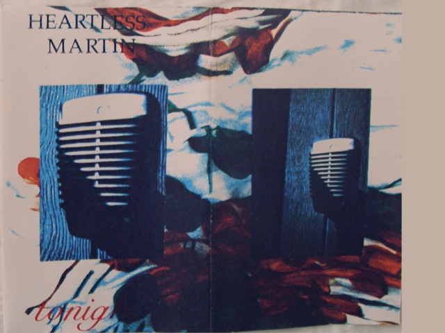
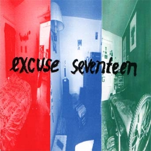
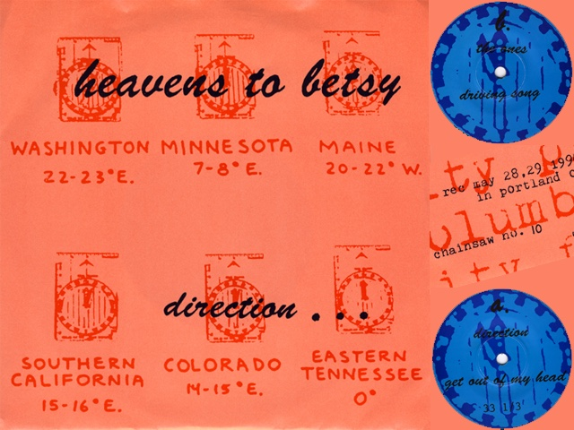
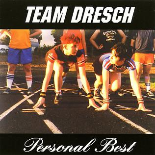
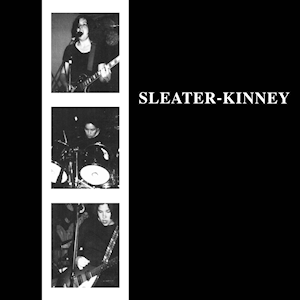
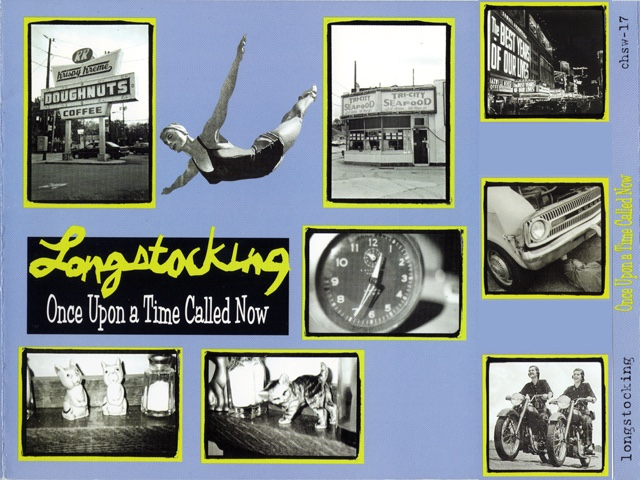
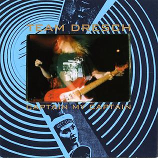
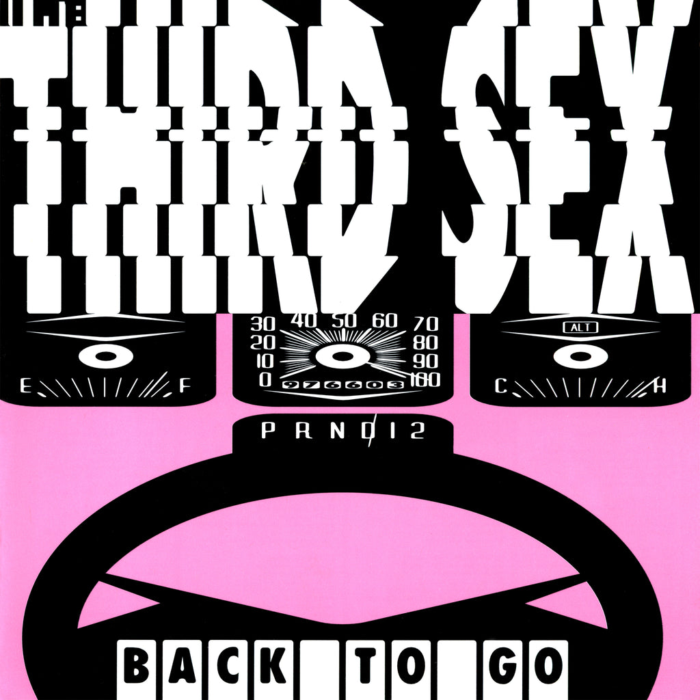
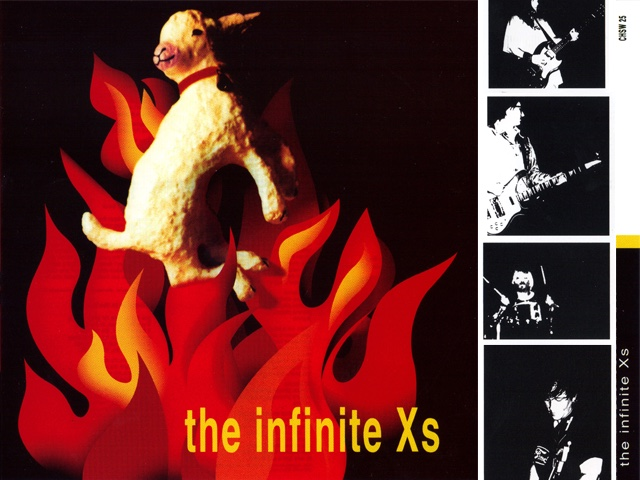
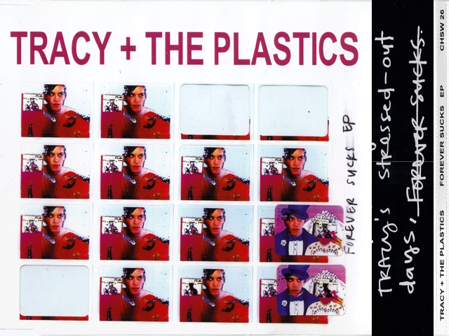

The catalog
Records, tapes & zines
CHAINSAW 1–3.5
Zines

CHSW 4
Various Artists
Chainsaw 4
Cassette Compilation, 1992
Secret
CHSW 5
Secret Release

CHSW 6
Frumpies
Frumpies 7″
7", 1993

CHSW 7
Heartless Martin
Tonigh
Cassette EP, 1993

CHSW 8
The Fakes
Real Fiction
LP/CD, 1995

CHSW 9
Excuse Seventeen
Excuse Seventeen
LP/CD, 1995

CHSW 10
Heavens to Betsy
Direction...
7", 1994

CHSW 11
Team Dresch
Personal Best
LP/CD/Cassette, 1995

CHSW 12
Sleater-Kinney
Sleater-Kinney
LP/CD, 1995
CHSW 13
Sleater-Kinney
Call The Doctor
LP/CD, 1996

CHSW 14
Kaia
Kaia
LP/CD, 1996

CHSW 15
The Third Sex
Card Carryin'
CD, 1996

CHSW 17
Longstocking
Once Upon A Time Called Now
LP/CD, 1997

CHSW 18
Team Dresch
Captain My Captain
LP/CD, 1996

CHSW 19
The Need
The Need
CD, 1997

CHSW 20
The Need
The Need Is Dead
CD, 2000

CHSW 21
The Third Sex
Back To Go
CD, 1999

CHSW 22
No. 2
No Memory
CD, 1999
CHSW 23
Tracy + The Plastics
Muscler's Guide to Videonics
CD, 2001

CHSW 25
The Infinite Xs
The Infinite Xs
LP/CD, 2002

CHSW 26
Tracy + The Plastics
Forever Sucks EP
CD, 2002